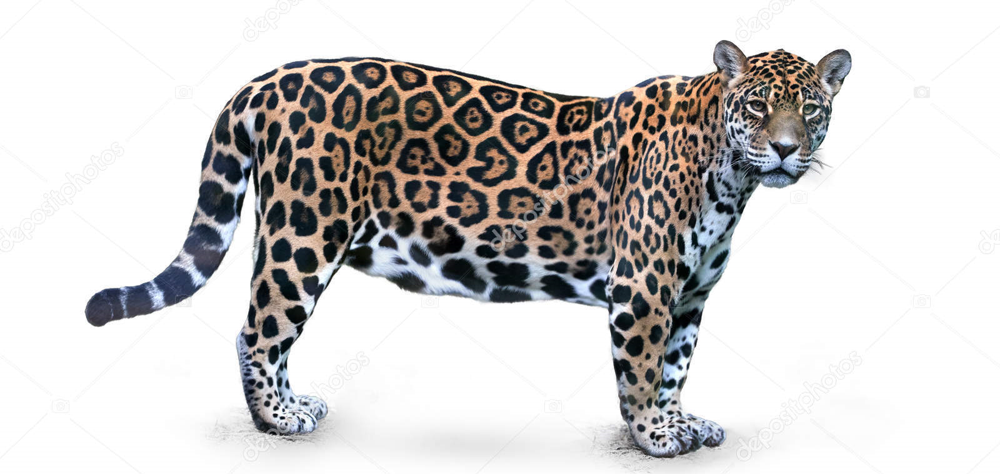
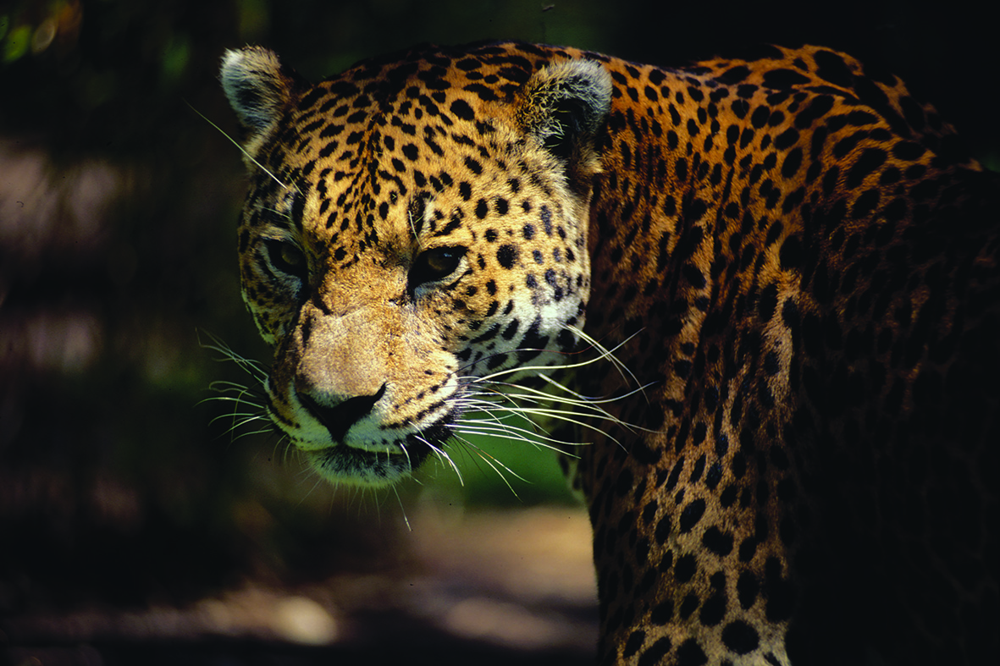

Jaguar (Panthera onca)
El jaguar (Panthera onca) es un gran felino nativo de América, conocido por su poderosa constitución y su habilidad para nadar. Es un animal carnívoro que caza principalmente por la noche. Los jaguares son solitarios y territoriales. Actualmente, enfrentan amenazas como la fragmentación del hábitat y la caza ilegal.

HÁBITAT Y ESTILO DE VIDA
El jaguar, también conocido como yaguareté, es un animal de la familia de los félidos y panterinos, nativo y endémico de América.
- A diferencia de muchos otros felinos, los jaguares no rechazan el agua. De hecho, son muy buenos nadadores. Cazan peces, tortugas e incluso caimanes, usando unas fauces increíblemente poderosas para perforar los cráneos de sus presas
- Los jaguares también se alimentan de venados, pecaríes, capibaras, tapires y otros animales terrestres, y para capturarlos, prefieren emboscarse por la noche. Los jaguares viven solos y son territoriales, delimitan su área marcándola con desechos o rasgando árboles
- Por parto, las hembras tienen de uno a cuatro cachorros, y estos nacen ciegos e indefensos. La madre se queda al lado de ellos y los defiende de cualquier animal que pueda acercarse, incluso del propio padre
- En el pasado, los jaguares se movían por un amplio territorio desde el centro de Argentina hasta el suroeste de los Estados Unidos. Hoy, su principal dominio es la cuenca del Amazonas, aunque todavía hay grupos pequeños en América Central
- Los jaguares enfrentan una serie de amenazas, entre estas, la fragmentación del hábitat y la matanza ilegal. Las altas tasas de deforestación de América del Sur y América Central no solo han destruido el hábitat de los jaguares, sino que también lo han fragmentado
5 caracteristicas sobre el Jaguar (pather onca)
- Carnívoros: Los felinos son carnívoros obligados, lo que significa que necesitan consumir carne para sobrevivir. A diferencia de los omnívoros, que pueden obtener nutrientes de fuentes vegetales y animales, los felinos obtienen sus nutrientes esenciales, como la taurina y el ácido araquidónico, de la carne de sus presas.
- Sentidos agudos: Los felinos tienen sentidos extremadamente agudos que les ayudan a cazar eficazmente. Su visión es excepcionalmente buena, especialmente en condiciones de poca luz, gracias a una capa de células reflectantes en la parte posterior del ojo llamada tapetum lucidum. Esto les permite ver casi tan bien de noche como de día
- Solitarios: La mayoría de los felinos son solitarios por naturaleza, lo que significa que prefieren vivir y cazar solos. Marcan su territorio con su orina y con las marcas de rasguños en los árboles para advertir a otros felinos que esa área está ocupada.
- Retráctiles: Los felinos tienen garras retráctiles, lo que significa que pueden esconder sus garras cuando no las están utilizando.
- Comunicación: Los felinos se comunican a través de una variedad de medios, incluyendo vocalizaciones, lenguaje corporal y marcas de olor.
Galeria
